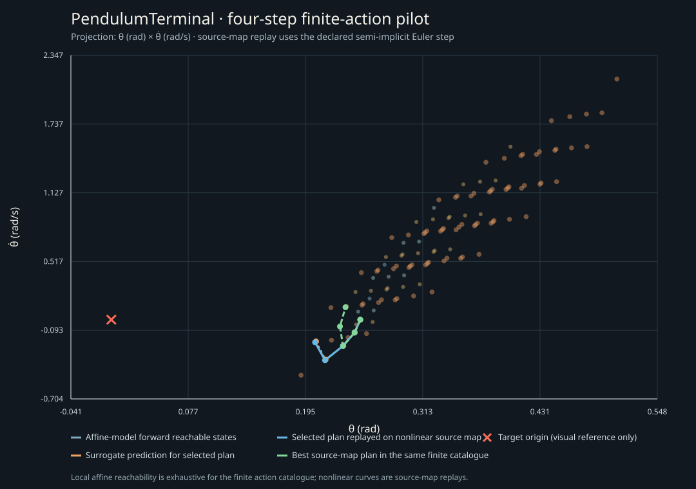

PendulumTerminal: local-linear finite-action pilot
The current finite-action solver exhausts all 81 four-step plans on a two-state affine model linearized at the upright equilibrium. An independent exhaustive enumeration then evaluates every plan using the pinned source environment's nonlinear semi-implicit Euler map and source running cost.

Forward reachable points are exact for the declared affine pilot and finite action catalogue. Replay curves use the source nonlinear update.
| Result | Value |
|---|
| Linearized terminal objective | 0.0459731001717 |
| Selected action sequence | [-1.0, -1.0, -1.0, 0.0] |
| Source running cost of selected sequence | 0.254058925319 |
| Best source running cost in the same finite catalogue | 0.244113074455 |
| Cost gap from source finite-catalog optimum | 0.00994585086363 (4.074%) |
| Source-map catalogue minimizers | [-1.0, -1.0, 0.0, 0.0] |
| Release CLI duration (28 calls) | 3.241 ms median (3.119–3.918 ms) |
Scope: the upstream environment randomizes its reset state and runs for 5 seconds. This pilot fixes the initial state to (θ, θ̇) = (0.25 rad, 0 rad/s) and uses four 0.05-second steps. The planner minimizes a terminal quadratic on the local affine model; the source objective is a running cost. The selected action is replayed and compared with an independent exhaustive source-map oracle over the same 81 finite action sequences. These values do not establish continuous-action or full-horizon optimality.
Source: PendulumTerminal.py, commit f4d76c60f4003f50954174e96eafd8e514bd5441, blob 4c3ef514524fa98fab53b2de18dfa9127316263f. CSL source commit: a1d628cda977cefce7747ca8ea56678b967bd0bb. Method: csl.finite-action-minimax.numerical; assurance is exhaustive only for the declared affine surrogate catalogue.
Raw result and oracle record · Capture environment · Reproduction steps and timing notes · Standalone SVG · PNG
Timing covers process launch, affine-plan enumeration and JSON serialization/capture; it excludes the Python oracle and rendering. It is descriptive for this single fixture and has no comparator or speedup claim. The CPU limiter is unestablished.
Reproduction commands and raw timing observations are in README.md.